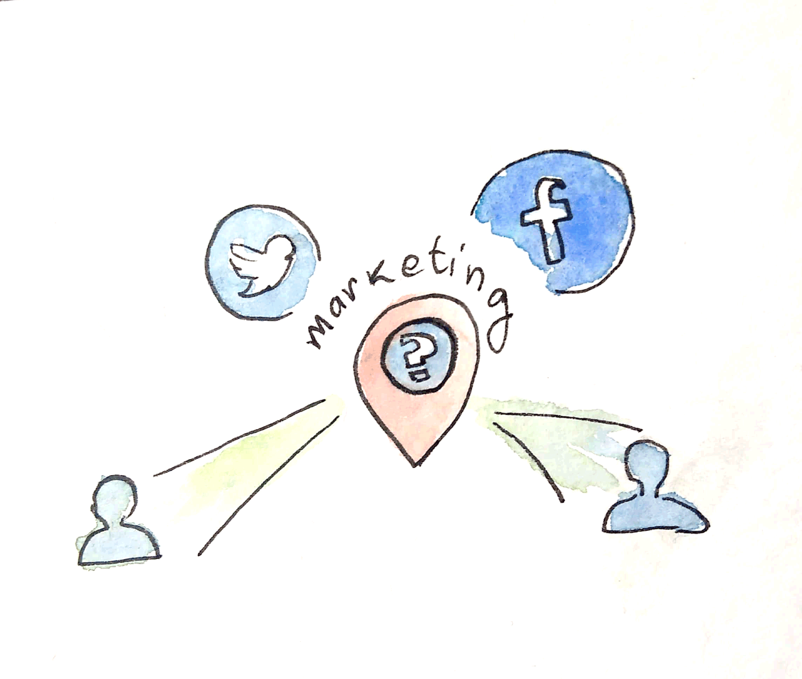

Experiência do consumidor com data insights
Autofca

A solução é uma proposta de um dashboard para o carro no qual o usuário consiga visualizar informações em tempo real de gestão do carro. O Sistema permite integração com ecossistemas de vendas.
Fiat live

Com foco no conceito de economia compartilhada o projeto propõe a utilização de um ecossistema de carros para usuários. A proposta também ressalta o objetivo de coletar dados não estruturados por meio de interfaces conversacionais para possibilitar análises de dados com Watson IoT.
Feel

O projeto aborda o momento da tomada de decisão da compra de carros. Tem o propósito de mapear decisões utilizando mídias digitais e análise de sentimentos. Propõe personalizar a venda de veículos com as informações captadas de cada usuário.
EFeel

Mapeamento sentimentos em redes sociais utilizando a inteligência artficial Watson, a solução busca melhorar a experiência com base nos feedbacks encontrados. Como resultado uma campanha de marketing direcionado seria a solução posterior para incrementar o relacionamento entre clientes e empresa.
SimpliFCA
Proposta de utilizar análise de sentimentos e dados com inteligência artficial do Watson para entender comportamento do consumidor ao efetuar alguma publicação relacionada a compra de carros.